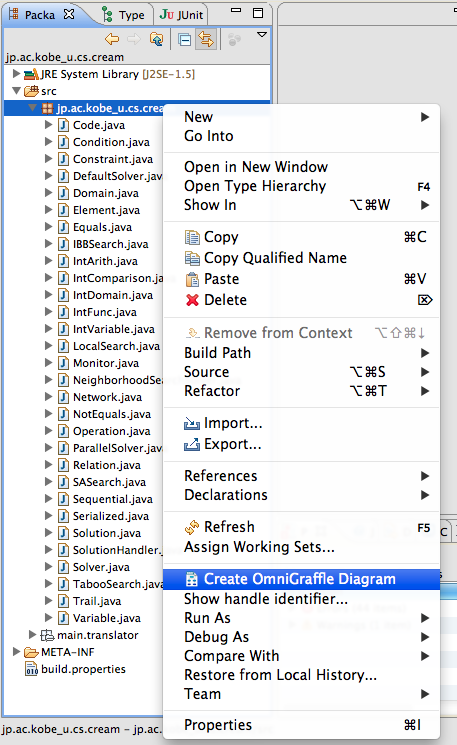
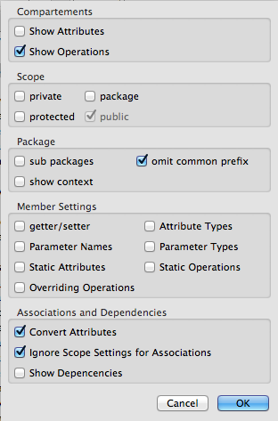
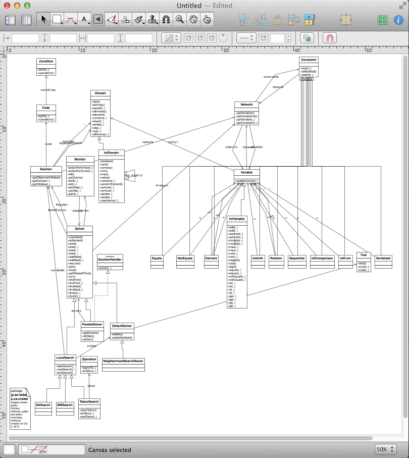

j2og
Create OmniGraffle class diagrams from your Java sources
Eclipse P2 update site

| Drag'n drop to install, or visit eclipse Marketplace |
View the Project on GitHub
jpilgrim/eclipsetools
JavaToOmniGraffle.
OmniGraffle is a great diagramming tool for Mac OS X. The Eclipse plugin JavaToOmniGraffle (j2og) adds a new menu entry to the Eclipse package explorer, so that you can automatically create class diagrams in OmniGraffle from your existing Java sources.
Its usage is very simple: Open or create a drawing in OmniGraffle. Then switch back to Eclipse and select "Create OmniGraffle Diagram" from the context menu of a java source file (i.e. compilation unit) or package in the package explorer. You can then configure the output, and the plugin will scan the package and add a class diagram of this package to the top drawing opened with OmniGraffle.
|  Context Menu |
 Configuration Dialog |
 Created Diagram |
{kind=link}
{kind=link}
{kind=link}
The plugin can create class diagrams for selected types, packages, and sub packages. Besides, the context of selected classes, that is types on which the selected types depend on, can be visualized as well. Attributes are drawn as associations if possible, e.g., parameterized collection types are recognized and replaced by 0..* associations. You can configure the output with some switches. Besides filtering members based on their scope, some additional filters are implemented:
- Getter and setters can be omitted
- Methods implementing or overriding methods of interfaces or classes already shown in the diagram can be omitted as well
- In order to better see relations between classes, you can force to draw all associations, even if they would be filtered out by the scope filter.
The newly created shapes are initially drawn using OmniGraffle's hierarchical layout algorithm.
Tip: In order to manually change the diagram, you may want to have a look at my collection of UML shapes at Graffletopia.
Technical Remarks
This plug is only available on Mac OS X, since OmniGraffle is a native Mac application. The communication between Eclipse and OmniGraffle is done via AppleScript, which is very easy thanks to Peter Friese's blog post.
License
This program is free software: you can redistribute it and/or modify it under the terms of the GNU General Public License as published by the Free Software Foundation, either version 3 of the License, or (at your option) any later version.
This program is distributed in the hope that it will be useful, but WITHOUT ANY WARRANTY; without even the implied warranty of MERCHANTABILITY or FITNESS FOR A PARTICULAR PURPOSE. See the GNU General Public License for more details.